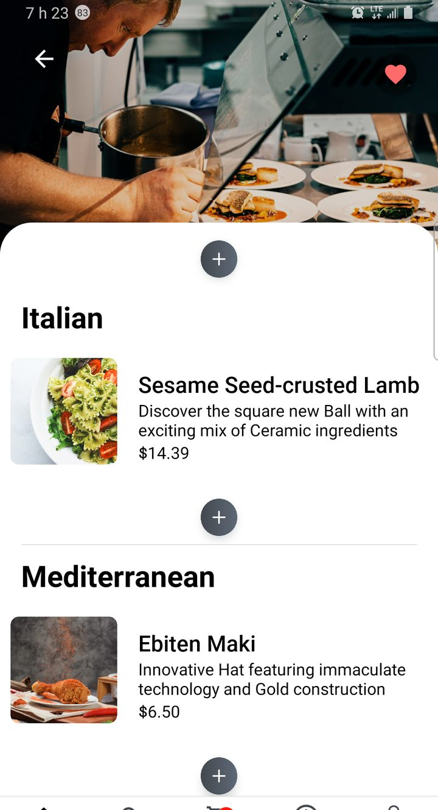
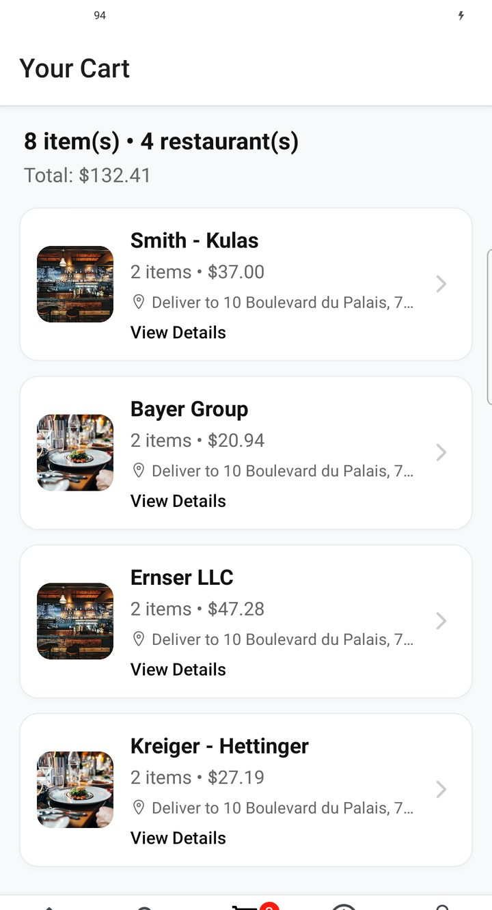
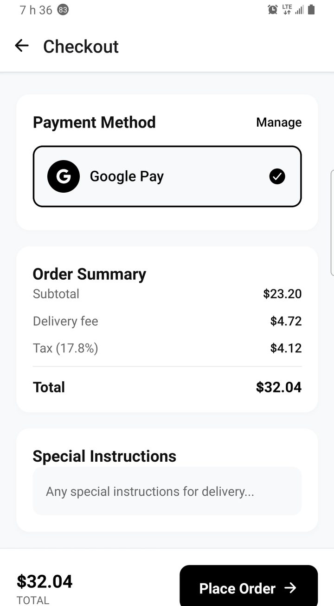
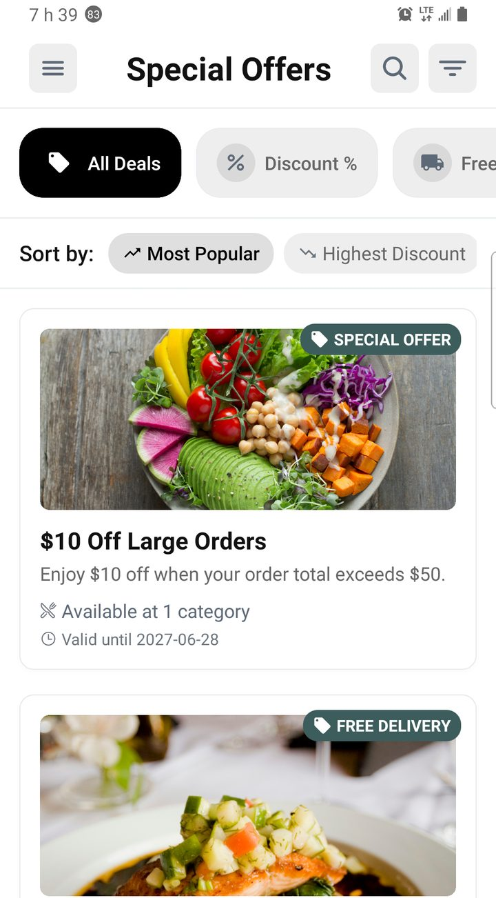
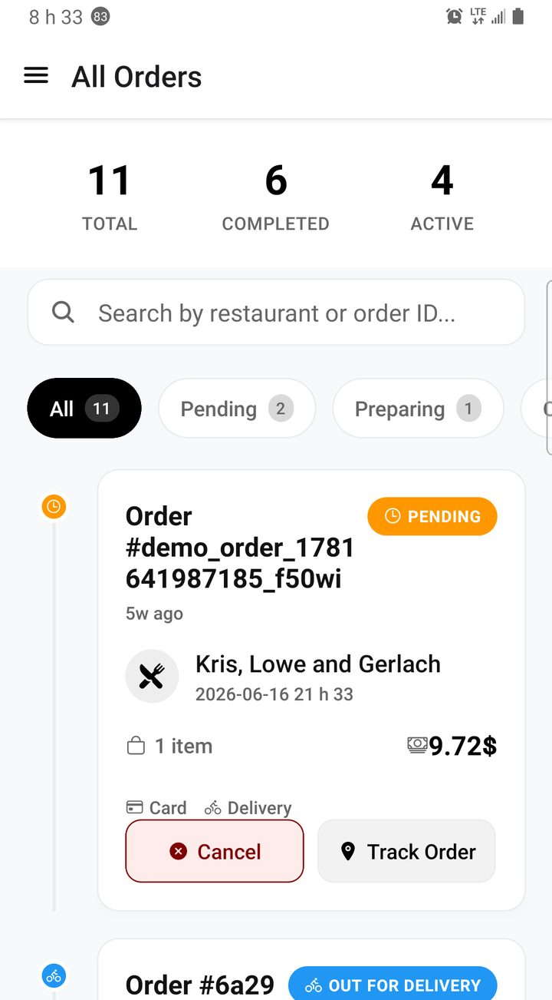

Ordering & discovery
How customers find restaurants, build a cart, apply offers, and place an order — the core marketplace journey.
Find food in a multi-restaurant marketplace
The customer app is a multi-store marketplace: one install, many restaurants. Home mixes delivery / pickup, search, categories, banners, and featured places. Nearby map views help when the customer wants “what’s close”, and restaurant pages carry hours, fees, ratings, offers, and the menu.
Discovery path
- Open the app and choose Delivery or Pickup when both are available.
- Browse the homepage (categories, offers, restaurants) or open Search for a keyword.
- Optionally use the map / nearby view to pick a place geographically.
- Open a restaurant: check status, ETA / fee cues, offers, then browse the menu and add items (with variants when priced).

Homepage — delivery/pickup, categories, offers

Search restaurants and dishes

Restaurant menu and add to cart
Cart, offers, and checkout
The cart stays synced with the backend. Customers can manage items, apply a promo / coupon when you run campaigns, choose delivery or pickup, pick an address, and pay with an enabled method (card, cash on delivery, wallet, and other gateways you activate).
Offers and coupons are how you grow volume: percentage or fixed discounts, free delivery, and similar campaign types configured in admin. The customer sees them on home / restaurant surfaces and can enter a code at checkout when the campaign allows.
Place an order
- Review the cart (quantities, extras, totals).
- Apply a coupon or claim a listed offer when available.
- Confirm fulfillment (delivery vs pickup), address, and payment method.
- Place the order, then follow it in order history / tracking.
Where offers are configured
Coupons and promotions are managed in the admin app — see Promotions & coupons. Payment methods and wallet top-ups: Wallet & payments and Monetization.

Cart before checkout

Summary, payment, place order

Offers / vouchers surface
Order history
After checkout, orders appear in the order list with status and detail. From there customers reopen tracking, contact the restaurant when needed, and later leave reviews when your flow enables them.

Order history list